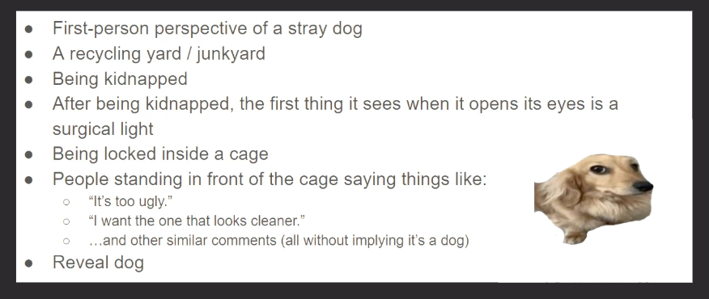
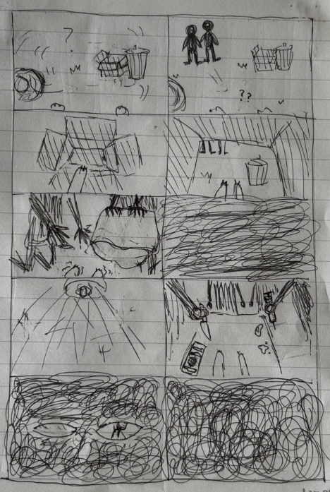
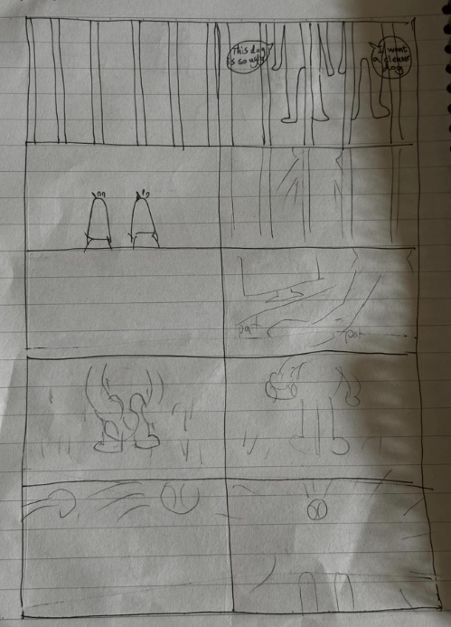
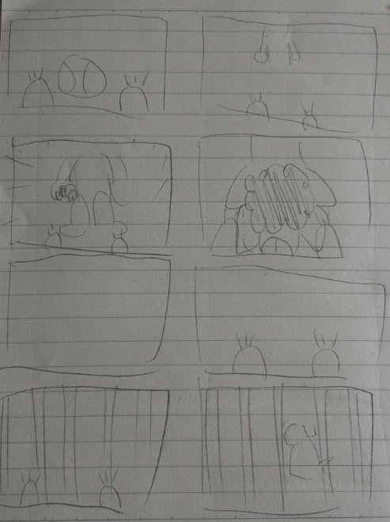

Nadine
Nadine
Production Journal
During the production process, I think the hardest part was turning our script into a real video. We had to record many scenes, and sometimes film the same part over and over until we were satisfied. Besides that, the weather during those weeks wasn't very good. It rained a lot, so we couldn't finish the outdoor scenes on time. We had to change our filming schedule several times, which made the process even more difficult. Although we faced many challenges, everyone cooperated well and did their best. In the end, we were very happy that we finished the video together.
Script & Shot List

Storyboards


